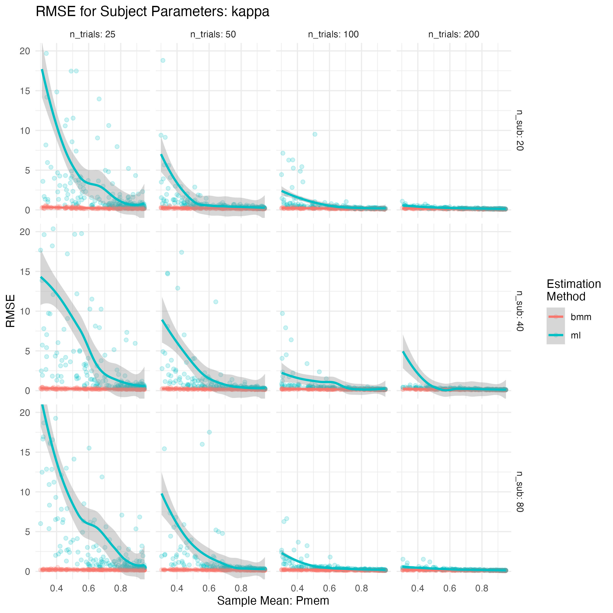

ML vs. BMM parameter recovery of the two-parameter mixture model
Procedure and Design of the parameter recovery simulation
First, we generated subject parameters for 20, 40, or 80 subjects of the two parameter mixture model. Second, using these subject parameters we generated data using the random generation function for the two-parameter mixture model implemented in bmm (rmixture2p()) with four different numbers of observations per subject: 25, 50, 100, and 200. Third, we then estimated parameters for the two-parameter mixture model using subject-wise maximum likelihood estimation implemented in the mixtur package, and using hierarchical Bayesian estimation implemented in the bmm package. We repeated this parameter recovery procedure 200 times for each condition combination (i.e. a total of 2400 = 3 * 4 * 200 times) to approximate the variability in parameter estimation due to random noise in the data generating process.
Over repetitions, the means of \(P_{mem}\) & \(\kappa\) for generating subject parameters were randomly drawn from uniform distributions. For \(P_{mem}\) means ranged from 0.3 to 0.95, and for \(\kappa\) means ranged from 2 to 15. To ensure that both \(P_{mem}\) and \(\kappa\) were in the correct parameter range, subject parameters for \(P_{mem}\) were drawn from a normal distribution on the logit scale with a standard deviation of \(\sigma = 0.3\): \(logit(P_{mem}) \sim N(logit(\mu),0.3)\), and for \(\kappa\) were drawn from a normal distribution on the log scale with a standard deviation of \(\sigma = 0.3\): \(log(\kappa) \sim N(log(\mu),0.2)\)1
Results of the parameter recovery simulation
As dependent variables of the parameter recovery, we calculated recovery of the hyper parameters (i.e. means for pmem and kappa in each simulated sample) via the correlation and the normalized root mean square error (RMSE) between the data generating hyper parameters and the estimated means form the ML and BMM approach on their native scale (\(P_{mem} = [0,1]\), \(\kappa = [0,\infty]\)). Additionally, we calculated recovery of subject level parameters via the correlation and RMSE between the data generating subject parameters and the estimated parameters from the ML and BMM approach for each simulation condition over repetitions. The first analysis provides information how well suited the different approaches are to capture mean differences between samples or experimental condition, whereas the second analysis gives a general assessment of parameter recovery of subject level parameters.
Recovery of Sample Means
Probability of recalling items from memory
In Figure 1 you see the recovery of sample means over the 200 repetitions of the simulation for the probability of recalling items from memory. Both the ML and BMM implementation recover the sample means quite well, although BMM seems to be slightly more accurate especially when \(P_{mem}\) is smaller.
This is even more evident when considering the bias in the estimation of sample means as a function of the generating sample mean as shown in Figure 2. Here we can clearly see that estimating \(P_{mem}\) with the ML implementation leads to overestimation of sample means if the true sample mean of \(P_{mem}\) is small, whereas the Bayesian hierarchical estimation does not show large bias over the whole range of simulated \(P_{mem}\) sample means.
Precision of Memory Representations
For sample means of \(\kappa\), the differences between estimation with subject-wise ML compared to hierarchical Bayesian estimation are much stronger than for \(P_{mem}\). Figure 3 clearly shows that the hierarchical Bayesian estimation implemented in bmm outperforms subject-wise ML, especially with less than 100 observations per subject. Although the rank ordering of the \(\kappa\) sample means is still acceptable for more than 100 observations per subject for the ML approach, there are severe biases towards overestimating \(\kappa\) with lower numbers of observations per participant. Although the Bayesian hierarchical approach is also slightly affected by the total amount of data used to estimate the sample mean of \(\kappa\) it shows remarkably good recovery even with as little as 25 observations per subjects.
Previous recovery simulations have indicated that the recovery of \(\kappa\) gets more noisy as the proportion of recalling items from memory reduces and less data provides information on the precision of memory responses. Figure 4, illustrates that the subject-wise ML implementation indeed shows exactly this pattern when considering the estimation bias, wheres the hierarchical Bayesian implementations does not shown this trend. Similar plots for parameter recovery will be shown below for the subject level estimates.
Recovery of Subject Parameters
All in all, the recovery of subject parameters provides a similar picture. As would be expected, recovery was worse compared to the recovery of sample means, but still the hierarchical Bayesian implementation consistently outperformed the subject-wise ML estimation. Figure 5 illustrates the distribution of correlations of generating with recovered subject parameters for both \(P_{mem}\) and \(\kappa\). It is evident that there is a lot of variability in the recovery, that is likely in part due to the smaller sample sizes compared to other simulations (e.g. Grange & Moore, 2020) and thus variability in the range of parameters (despite a constant standard deviation for generating subject parameters). However, to adequately gauge the estimation of sample means in experimental settings we consciously choose to simulate smaller samples.
The correlation estimates shown in Figure 5 obviously depend on the variability of parameters in the simulated sample. In our simulations this variabilty was considerably less than in other simulations (e.g. Grange & Moore, 2020) that covered the full range of reasonable parameter values. Instead, we choose to simulate subject parameters with smaller standard deviations that are likely to find in common experiments and samples.
A more independent indicator of recovery that does not depend on the standard deviation of the simulated sample is the RMSE. Figure 6 shows the RMSE of recovery of subject parameters. Here we can see, that the hierarchical Bayesian estimation has consistently lower RMSE values even for very low number of observations per participant.
As for the sample means, we also explored how recovery of subject parameter changes as the range of parameters differs. Figure 7 shows how the RMSE changes as a function of the sample mean of \(P_{mem}\). The results indicate that the RMSE is smaller the larger the sample mean of \(P_{mem}\), this effect is however stronger for the recovery with subject wise ML than for Bayesian hierarchical estimation.
We find a similar pattern for the subject recovery of \(\kappa\) as a function of the sample mean of \(P_{mem}\), as shown in Figure 8, however for \(\kappa\) the dependency of recovery on the sample mean of \(P_{mem}\) is much stronger for subject-wise ML estimation, whereas the hierarchical Bayesian estimation shows almost no dependency of subject recovery of \(\kappa\) by the sample mean of \(P_{mem}\).

Footnotes
The generation of subject parameters on the logit scale for \(P_{mem}\) and on the log scale for \(\kappa\) slighty favors the
bmmimplementation for parameter estimation in the hierarchical model, as these distributions are what is assumed as random effects on the parmaeter scale. However, we think these distributions over subject represent an adequate reflection of variation over subjects.↩︎